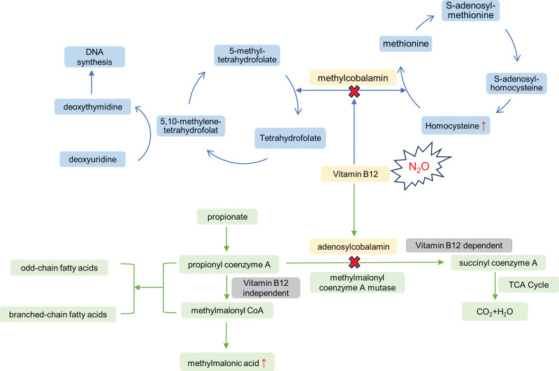
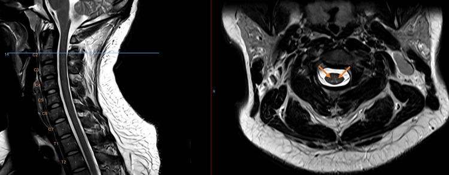
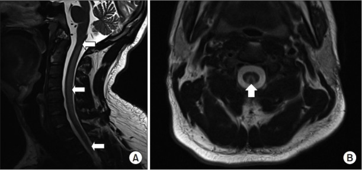
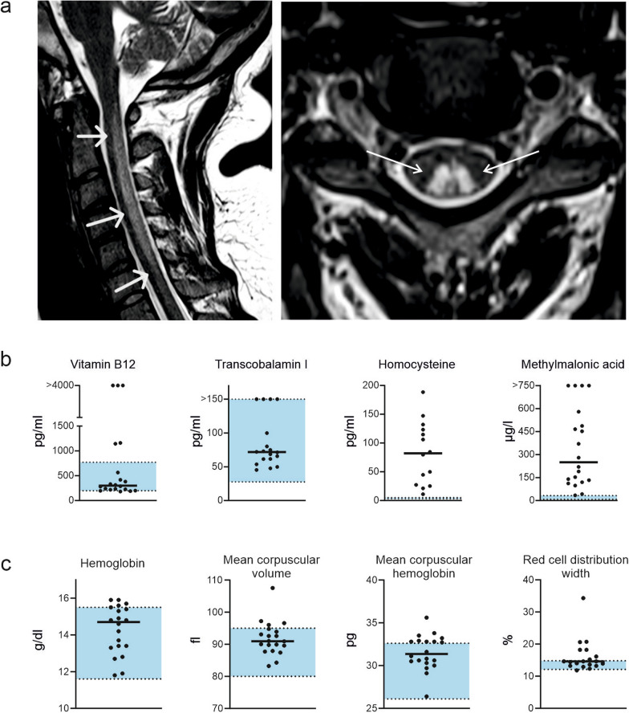

265 — Ngộ độc khí cười (N₂O) & thiếu vitamin B₁₂ chức năng: tủy sau "chữ V ngược" / Nitrous oxide-induced myeloneuropathy (functional B₁₂ deficiency)
Tags: pattern:tang-tin-hieu-t2 pattern:doi-xung pattern:tuy-sau pattern:chu-v-nguoc pattern:khong-ngam-thuoc pattern:myelin pattern:teo-tuy vung:tuy-co vung:tuy-nguc vung:cot-song-co score:mRS score:NIS-LL protocol:MRI-tuy protocol:T2-axial protocol:DWI protocol:EMG-NCS
Mức chắc chắn (certainty): tổng hợp y văn (literature synthesis) — 2 đoàn hệ lớn (81 người/100 lần nhập viện, Br J Clin Pharmacol 2026, PMC13714620; 20 người, Neurol Res Pract 2025, PMC12049779), 1 loạt 10 người (Neuromuscul Disord 2026), 1 tổng quan 154 ca (The Neurologist 2024), 1 loạt 8 ca (2024) và 3 ca nguyên văn có ảnh (Cureus 2026, PMC13049691 — CC BY; Ann Rehabil Med 2019, PMC6734019 — CC BY-NC; Neurol Res Pract 2025, PMC12049779 — CC BY). Bổ sung 2026-11-13: phân tích gộp 1.809 bệnh nhân (Cureus 2026, PMC13267259), đoàn hệ 52 ca (eNeurologicalSci 2026, PMC13213638), 35 ca Việt Nam tại Bạch Mai 2022–2024 (eNeurologicalSci 2025, PMC12464543) và mô hình tự tiêm hydroxocobalamin 46 ca (BMJ Neurol Open 2025). Không có RCT về liều B₁₂ hay thời gian điều trị; phác đồ dưới đây là tổng hợp thực hành từ ca/đoàn hệ, chỗ suy luận được ghi rõ.
Câu chốt: khí cười (N₂O) bất hoạt vitamin B₁₂ bằng cách oxy hóa ion coban → khóa methionin synthase → ức chế methyl hóa myelin. Kết quả là tủy sau (dorsal columns) mất myelin đối xứng, trên MRI là hai vệt tăng T2 hình "chữ V ngược" (inverted V) ở tủy cổ. Ba con số phải thuộc: (1) B₁₂ huyết thanh bình thường ở 95% bệnh nhân trong một đoàn hệ (20 người) — B₁₂ bình thường KHÔNG loại trừ; (2) homocystein và MMA tăng 100% ở đoàn hệ đó, và homocystein có độ nhạy 95% / đặc hiệu 13%, MMA 93%/45%; (3) tiếp tục dùng N₂O = không hồi phục (20% được theo dõi, không ai cải thiện). Đây là bệnh chẩn đoán bằng BỆNH SỬ + homocystein/MMA, không bằng B₁₂.
1. Tổng quan bệnh học – cơ chế hình ảnh – vì sao "chữ V ngược"
1.1 Cơ chế phân tử: một phân tử khí, hai enzym
- N₂O oxy hóa Cob(I) → Cob(III) trong cobalamin → cobalamin không còn dạng hoạt động (methylcobalamin, adenosylcobalamin). Hai enzym bị khóa:
- Methionin synthase: giảm methionin và S-adenosylmethionin (SAM) → giảm methyl hóa phospholipid myelin → myelin mỏng, phù gian myelin (intramyelinic edema) → mất myelin tủy sau.
- Methylmalonyl-CoA mutase: ứ methylmalonic acid (MMA) — đây là dấu ấn đặc hiệu hơn B₁₂ huyết thanh.
- TẠI SAO tủy sau: cột sau gồm sợi myelin dày, dẫn truyền cảm giác bản thể–rung–vị thế, mật độ myelin cao nhất tủy, dòng máu nuôi tương đối nghèo so với nhu cầu → tổn thương sớm và đối xứng. Vì vận động (cột bên) và cảm giác đau–nhiệt (cột trước–bên) ít bị hơn, bệnh cảnh là mất cảm giác bản thể + mất thăng bằng, không liệt mềm kiểu tủy trước.
- TẠI SAO "chữ V ngược": giải phẫu rãnh giữa sau (posterior median septum) tách fasciculus gracilis (trong) và cuneatus (ngoài); hai bó tăng tín hiệu hình hai cánh trên lát cắt axial → "inverted V" (còn gọi "rabbit ears"). Dấu này không đặc hiệu — thiếu B₁₂ kinh điển, thiếu đồng, HIV, giang mai cũng cho hình tương tự.
- Vật lý hình ảnh (TẠI SAO T2 sáng, không ngấm, không hạn chế khuếch tán): phù gian myelin và giảm myelin → tăng nước tự do ngoại bào → T2/FLAIR tăng tín hiệu, T1 đồng/giảm nhẹ. Không phá hàng rào máu–tủy → không ngấm gadolinium (ngấm nhẹ thoáng qua ở một số ca cấp). Không phải nhồi máu/áp-xe → DWI không hạn chế rõ; hạn chế khuếch tán mạnh phải nghĩ nhồi máu tủy (bài 226). Ở thể nặng–muộn, tăng tín hiệu teo dần và tủy mỏng đi (atrophy) — dấu tiên lượng xấu.

Sơ đồ cơ chế: N₂O (tia nổ) tấn công cobalamin → homocystein tăng (không chuyển thành methionin, giảm SAM–methyl hóa myelin) và acid methylmalonic tăng (methylmalonyl-CoA mutase bị ức chế); đồng thời giảm tổng hợp DNA (thymidylate) → thiếu máu hồng cầu to khi tổn thương nặng. Nguồn: Medicine (Baltimore) 2024 (PMC10860927), CC BY 4.0.1.2 Dịch tễ & liều phơi nhiễm (dùng để hỏi bệnh, không phải để phán xét)
- Khảo sát quốc tế: tiền sử dùng N₂O cả đời 17%, dùng trong năm 11,9%, người dùng 69,3% là nam; 4,2% người dùng có triệu chứng cảm giác dai dẳng kiểu "găng–tất".
- Mỹ 2019 (SAMHSA): ~12,9 triệu người từ 12 tuổi trở lên đã lạm dụng N₂O. Châu Âu: EMCDDA 2022 xếp N₂O vào nhóm chất hướng thần được dùng nhiều nhất.
- Liều–đáp ứng (đoàn hệ Sydney 2026, 81 người): tổng lượng tích lũy là yếu tố dự báo mạnh nhất; liên quan tủy thoái hóa bán cấp tủy sau (SCD) p = 0,006, bệnh thần kinh ngoại biên p = 0,036, tương quan với độ nặng thần kinh ngoại biên (Spearman ρ = 0,43, p = 0,001).
- Kiểu dùng thực tế: trung bình 2.500 g/ngày (Frankfurt); ca nặng > 500 cartridges/ngày; ca Cureus: 5–20 canister/lần, 2–5 lần/tháng trong 7–10 năm, khởi phát sau một lần dùng nặng.
- Tổn thương thần kinh trong 154 ca (tổng quan 2024): tuổi trung vị 22 (19–26), phơi nhiễm 9 (3–18) tháng; tủy 75%, thần kinh ngoại biên 58% — tức đa số là myelo-polyneuropathy phối hợp, không phải chỉ tủy.
- Cập nhật 2026 — ba bộ số liệu lớn (dùng để tư vấn tiên lượng):
- Phân tích gộp 1.809 bệnh nhân (257 nghiên cứu, Cureus 2026, PMC13267259): xét nghiệm bất thường theo thứ tự homocystein 83,0–84,9% → MMA 68,4–83,7% → B₁₂ huyết thanh 47,2–55,8% → MCV 20,8–63,0% → hemoglobin 25,3–42,3%. Tức một nửa số ca có B₁₂ "bình thường", và chỉ ~ 40% ca được làm MMA, ~ 60% được làm homocystein.
- Đoàn hệ một trung tâm 52 ca (eNeurologicalSci 2026, PMC13213638): tuổi trung vị 24,0 (21,8–28,0), nữ:nam = 1,7:1, khởi phát cấp < 4 tuần 61,5%**; **cảm giác 94,2%**, **thất điều khi đi 86,5%**, **yếu ngọn chi > gốc chi 88,5%; homocystein tăng 89,6% nhưng B₁₂ thấp chỉ 10,4%; MRI bất thường 31/48 = 64,6%, trong đó "chữ V ngược" 54,8%; CMAP giảm mà SNAP còn nguyên 32,7%, kim EMG có dấu hiệu mất thần kinh đang tiến triển 66%.
- Việt Nam — 35 ca tại Bạch Mai 2022–2024 (eNeurologicalSci 2025, PMC12464543): 65,7% nữ, tuổi trung vị 22, chủ yếu học sinh/nhân viên văn phòng với phơi nhiễm liều cao hằng ngày; dị cảm 88,6%, yếu cơ 82,9%, đi loạng choạng 77,1%; MRI tổn thương cột sau 60%; phác đồ hydroxocobalamin 1.000 µg tiêm bắp/ngày ≥ 7 ngày rồi uống B₁₂; 80% cải thiện rõ trong 2 tuần, hồi phục hoàn toàn 91,4%, 8,6% còn triệu chứng nhẹ — nghĩa là hồi phục tốt nếu điều trị sớm, nhưng không phải 100%.
2. Mẫu hình + chẩn đoán phân biệt theo vị trí (Gamut)
- Mẫu hình chốt: người trẻ mất cảm giác bản thể + thất điều dáng đi + dấu Romberg (+), đối xứng, không đau lưng, không sốt, không chấn thương; MRI: tăng T2 hai bên cột sau tủy cổ ("chữ V ngược"), không ngấm thuốc; B₁₂ có thể bình thường nhưng homocystein ± MMA tăng.
- Gamut theo vị trí tổn thương:
- Chỉ cột sau, cổ (điển hình N₂O): mất bản thể–rung, dáng đi như "giẫm bông", phản xạ gân xương giảm hoặc bình thường (vì kèm bệnh lý thần kinh ngoại biên); Babinski có thể âm.
- Cột sau + cột bên (SCD tiến triển): thêm tăng phản xạ, Babinski (+), rối loạn cơ tròn — dấu hiệu tổn thương bó vỏ–tủy; đây là thể nặng hơn, tiên lượng chậm hồi phục.
- Thần kinh ngoại biên đơn thuần: tê bì "găng–tất", MRI tủy bình thường — không loại trừ N₂O; cần EMG/NCS.
- Tủy ngực/thắt lưng: ít gặp hơn; nếu tổn thương cổ + ngực thì tiên lượng chức năng xấu hơn (loạt 2026: số đốt tổn thương là yếu tố dự báo chính).
- Gamut "tăng T2 đối xứng cột sau tủy":
- Thiếu B₁₂ chức năng do N₂O (bài này) · thiếu B₁₂ thật (thiếu máu ác tính, cắt dạ dày, ăn chay trường, metformin kéo dài) · thiếu ĐỒNG (copper) — bắt chước gần như hoàn hảo, kèm thiếu máu/giảm bạch cầu trung tính · bệnh tủy do HIV (vacuolar myelopathy) · giang mai tủy (tabes dorsalis) · ngộ độc methotrexate/cytosine arabinoside nội tủy · xơ hóa tủy do xạ (bài 268) · nhồi máu tủy trước (khác vị trí, "owl's eye") · viêm tủy cắt ngang/NMO (tổn thương dài, trung tâm, ngấm thuốc) · MS (ngắn, không đối xứng, quanh não thất) · chèn ép tủy do thoát vị/dây chằng vàng (bờ tủy, có tín hiệu chèn ép).
- Ba câu hỏi tại giường: (1) Có dùng khí cười không — hỏi thẳng, không gợi ý (bệnh nhân thường không tự khai); (2) Đối xứng, tủy sau, không đau không? (3) B₁₂/MMA/homocystein — và nhớ đo cả đồng trước khi kết luận.
3. Bảng so sánh phân biệt (ma trận đối chiếu)
| Thực thể (entity) | Hình ảnh điển hình | Chốt vào (rule-in) | Chốt loại (rule-out) | Gợi ý xác nhận |
|---|---|---|---|---|
| Myeloneuropathy do N₂O | T2 đối xứng cột sau tủy cổ ("chữ V ngược"), không ngấm, không hạn chế khuếch tán; có thể teo muộn | Bệnh sử dùng N₂O + Hcy/MMA tăng + B₁₂ có thể bình thường | B₁₂ bình thường KHÔNG loại trừ; MRI bình thường không loại trừ (chỉ 60–73% có tổn thương) | Hỏi bệnh sử kỹ; Hcy + MMA; EMG/NCS |
| Thiếu B₁₂ thật (SCD) | Cùng hình thái, thường tủy ngực + cột bên | B₁₂ thấp + MMA/Hcy tăng + thiếu máu hồng cầu to, không dùng N₂O | Dùng N₂O rõ ràng + B₁₂ bình thường → nghi N₂O | B₁₂, holoTC, MMA, Hcy, nội soi dạ dày nếu cần |
| Thiếu đồng (copper) | T2 cột sau giống hệt, có thể kèm cột bên | Đồng huyết thanh thấp + thiếu máu/giảm bạch cầu trung tính, sau phẫu thuật dạ dày | Đồng bình thường → loại | Ceruloplasmin, đồng huyết thanh, CBC |
| Nhồi máu tủy (tủy trước) | "Owl's eye" hai bên sừng trước, hạn chế khuếch tán, khởi phát đột ngột, liệt + mất đau–nhiệt | Khởi phát tức thì + DWI hạn chế + mất chức năng vận động/đau–nhiệt | Khởi phát nhiều ngày, cảm giác bản thể, DWI không hạn chế | MRI + DWI sớm; mạch máu (bài 226) |
| Viêm tủy/NMO | Tổn thương dài ≥ 3 đốt, trung tâm, phù, ngấm thuốc, không đối xứng | Tổn thương dài + ngấm thuốc + NMO-IgG/MOG (+) | Đối xứng cột sau, không ngấm, bệnh sử N₂O | MRI + kháng thể; DNT |
| MS | Ổ ngắn < 2 đốt, bờ bên/peripheral, không đối xứng, quanh não thất | Tiền sử từng đợt, McDonald 2017, dịch kẽ | Tổn thương đối xứng cột sau + bệnh sử N₂O | MRI sọ + tủy, DNT (OCB) |
| Chèn ép tủy | Tủy bị đè bởi đĩa/dây chằng, tín hiệu tại chỗ, hẹp ống sống | Hẹp ống sống + tín hiệu chèn ép + đau/lực cơ theo mức | Không có chèn ép + tổn thương đối xứng | MRI sagittal + axial; đo đường kính ống sống |

*Sagittal T2 (trái) và axial T2 (phải) tủy cổ: tăng tín hiệu đối xứng hai bên cột sau, tạo hình "chữ V ngược", lan từ C1 đến C5; trên sagittal khó thấy vì độ phân giải. Nguồn: Cureus 2026 (PMC13049691), CC BY 4.0.*Dấu hiệu "đọc đúng" trên từng chuỗi
- Axial T2 là chuỗi quyết định: phải đặt lát cắt vuông góc tủy tại đúng mức tăng tín hiệu; nếu chỉ có sagittal, tổn thương có thể bị bỏ (ca Cureus nêu rõ: không thấy trên sagittal vì độ phân giải).
- T2 sagittal: dải tăng tín hiệu dọc tủy cổ, thường không phù tủy rõ (khác viêm tủy); bờ không rõ — dễ bị đọc là "artifact".
- T1 sau tiêm: thường không ngấm — nếu ngấm mạnh, nghĩ viêm/u/khác, không phải N₂O.
- DWI: không hạn chế (khác nhồi máu); ADC không giảm.
- Giai đoạn muộn: tủy mỏng, teo, tăng tín hiệu tồn tại dù đã bỏ thuốc — tương ứng di chứng.
4. Protocol chụp + xét nghiệm + điều trị
MRI cột sống (không cần cản quang trước): sagittal T2 + axial T2 qua từng mức nghi ngờ; T1; DWI/ADC (loại nhồi máu); cân nhắc T1 sau tiêm nếu nghi viêm/u. Không cần CT trừ khi nghi chấn thương/xương.
Xét nghiệm tối thiểu (bộ "B₁₂ chức năng"):
- B₁₂ huyết thanh + holotranscobalamin (holoTC) — nhạy kém, đừng dựa vào.
- Homocystein toàn phần (Hcy) và methylmalonic acid (MMA) — dùng để chẩn đoán và theo dõi.
- Folate, đồng huyết thanh/ceruloplasmin, CBC + MCV + RDW, LDH, haptoglobin (loại thiếu máu do thiếu B₁₂/đồng); creatinin (MMA tăng trong suy thận — cạm bẫy).
Ngưỡng/giá trị tham chiếu thực dụng:
- Homocystein bình thường 5–15 µmol/L; trong đoàn hệ N₂O: trung vị 50 µmol/L (IQR 32–114) — gấp 3–7 lần bình thường.
- MMA bình thường < 0,27 µmol/L (theo đơn vị bài gốc); trong đoàn hệ: trung vị 0,68 (0,18–3,16).
- B₁₂ độ nhạy 22% / đặc hiệu 87%; holoTC 5% / 98%; Hcy 95% / 13%; MMA 93% / 45% cho việc phát hiện ca có SCD → Hcy/MMA để SÀNG LỌC, không để khẳng định.
- Hcy giảm nhanh sau ngừng N₂O: nửa đời 14,59 giờ (IQR 10,75–24,35) → xét nghiệm muộn có thể "bình thường giả".
Điều trị (tổng hợp từ ca/đoàn hệ — không có RCT):
- Ngừng N₂O tuyệt đối — điều trị quan trọng nhất; tiếp tục dùng = không hồi phục.
- Hydroxocobalamin 1 mg tiêm (bắp/dưới da) ngày 1 lần × 7 ngày, sau đó uống 2 mg/ngày đến khi hết triệu chứng (ca Cureus); nhiều nơi dùng 1 mg cách ngày × 5–10 lần rồi duy trì 3 tháng — chưa có so sánh.
- Methionin 1 g × 3/ngày × 6 tuần (ca Cureus, dựa trên cơ chế SAM) và folate sau khi bắt đầu B₁₂ — bằng chứng yếu, không thay thế B₁₂.
- Phục hồi chức năng sớm (tập dáng đi, cảm giác bản thể) — ca Cureus đi lại độc lập sau điều trị.
- Tự tiêm hydroxocobalamin tại nhà (mô hình Anh, BMJ Neurol Open 2025): 46 bệnh nhân (tuổi trung vị 23, 63% nam) chọn tự tiêm (n = 25) hoặc đến viện tiêm (n = 21) — tuân thủ đủ liều 79,7% vs 20,3% (p < 0,001), kết cục lâm sàng tương đương, 74% hồi phục hoàn toàn/gần hoàn toàn ở cả hai nhóm → khi thiếu giường/đường truyền, tự tiêm là lựa chọn hợp lý miễn là có theo dõi.
Phân độ/theo dõi: mRS lúc ra viện (0–6) và NIS-LL (thần kinh ngoại biên chi dưới); số đốt tủy tổn thương trên MRI là yếu tố dự báo chức năng (loạt 2026); theo dõi Hcy/MMA để xác nhận tuân thủ.
Sơ đồ xử trí:
flowchart TD
A[Người trẻ: tê bì + thất điều + Romberg] --> B{Có dùng khí cười?}
B -->|Không rõ| C[Hỏi lại kín đáo + xét nghiệm Hcy và MMA]
B -->|Có| D[MRI tủy cổ sagittal + axial T2]
C --> D
D --> E{Tăng T2 đối xứng cột sau?}
E -->|Có| F[Ngừng N2O + hydroxocobalamin 1 mg/ngày 7 ngày]
E -->|Không| G[Vẫn điều trị nếu bệnh sử và Hcy/MMA dương: MRI có thể bình thường]
F --> H{B12 thấp hoặc đồng thấp hoặc bất thường huyết học?}
H -->|Có| I[Điều trị nguyên nhân nền: B12 thật, đồng, folate]
H -->|Không| J[Theo dõi mRS + NIS-LL + phục hồi chức năng]
G --> J
I --> J
5. Biến thể bình thường và cạm bẫy
- B₁₂ bình thường (95% một đoàn hệ, 60% loạt khác) — cạm bẫy số 1. Chẩn đoán dựa Hcy/MMA + bệnh sử; đừng kết luận "không thiếu B₁₂" chỉ vì B₁₂ trong khoảng tham chiếu.
- HoloTC "tăng" trong ca Cureus — nghịch lý do N₂O ức chế chuyển hóa nội bào, không phải tăng dự trữ; không dùng holoTC để loại trừ.
- MRI bình thường gặp ở 27–40% (11/15 có tổn thương trong đoàn hệ Frankfurt; 60% trong loạt 2026; 1/5 ca trong loạt 5 ca có MRI bình thường). → MRI bình thường không loại trừ; EMG/NCS có thể là bất thường duy nhất.
- Nhầm với chấn thương tủy: ca 19 tuổi ngã tường, liệt tứ chi, MRI chỉ có tín hiệu cột sau → hóa ra N₂O; đừng gắn nhãn "chấn thương tủy" khi hình ảnh không khớp cơ chế (bài 221/223).
- Nhầm với MS/viêm tủy: tổn thương đối xứng, cột sau, không ngấm, không hạn chế khuếch tán là không điển hình cho MS/NMO → hỏi N₂O trước khi bắt đầu corticoid.
- Thiếu đồng bị bỏ qua: hình ảnh giống hệt; luôn đo đồng trước khi quy mọi thứ cho N₂O, đặc biệt ở người đã mổ dạ dày.
- Suy thận làm MMA tăng — MMA cao không đồng nghĩa thiếu B₁₂ chức năng; đọc cùng creatinin.
- Xét nghiệm muộn: Hcy nửa đời 14,59 giờ; nếu đã ngừng N₂O vài ngày, Hcy có thể về bình thường → hỏi bệnh sử vẫn là chốt.
- Biến chứng ngoài thần kinh: thiếu máu hồng cầu to (65% trong đoàn hệ Frankfurt có bất thường huyết học), huyết khối tĩnh mạch do homocystein cao, tổn thương do lạnh, ngộ độc cấp. Đừng chỉ đọc tủy.
- "Khí cười trong phòng mổ": bệnh nhân thiếu B₁₂ nền (ăn chay, metformin, cắt dạ dày) có thể nặng lên sau gây mê N₂O — cần hỏi trước mổ, không chỉ ở người lạm dụng.
6. Tự lượng giá — Blind Quiz
Ca 1 — Nam 27 tuổi, tê hai chân và hai tay 48 giờ, đi loạng choạng; dùng khí cười 7–10 năm. Nhìn ảnh trước, mô tả trước.
- Gợi ý: Romberg (+), mất rung–vị thế tới mào chậu, phản xạ gân xương giảm đều, Babinski (−).
- Hỏi: (1) Chuỗi xung và vị trí tổn thương? (2) Vì sao "chữ V ngược"? (3) Xét nghiệm nào quyết định?
Bấm để hiện đáp án (findings + chẩn đoán)
- Findings: sagittal T2: dải tăng tín hiệu dọc tủy cổ; axial T2: hai vệt tăng tín hiệu đối xứng ở cột sau, hình chữ V ngược, C1–C5, không ngấm thuốc.
- Chẩn đoán: myelopathy do N₂O (thiếu B₁₂ chức năng).
- Vì sao: N₂O bất hoạt cobalamin → khóa methionin synthase → giảm methyl hóa myelin ở cột sau (myelin dày nhất, dễ tổn thương); rãnh giữa sau tạo hình hai cánh.
- Xét nghiệm: B₁₂ thấp nhưng holoTC tăng, MMA tăng mạnh, Hcy tăng; điều trị hydroxocobalamin 1 mg dưới da/ngày × 7 ngày, sau uống 2 mg/ngày, methionin 1 g × 3/ngày × 6 tuần.
- Nguồn: Cureus 2026 (PMC13049691), CC BY 4.0.
Ca 2 — Hai bệnh nhân Hàn Quốc hít N₂O nhiều tháng, tê chi + bí tiểu + đi khó.

- Hỏi: (1) Dấu hiệu trên axial? (2) Vì sao có bí tiểu mà tổn thương lại ở cột sau? (3) Xét nghiệm giúp phân biệt với thiếu B₁₂ thật?
Bấm để hiện đáp án
- Findings: (A) sagittal T2: tăng tín hiệu dọc tủy cổ (mũi tên); (B) axial C2: tăng tín hiệu hình chữ V ngược hai bên cột sau.
- Chẩn đoán: SCD do N₂O. Bí tiểu không điển hình cho tổn thương cột sau đơn thuần — ở ca này là triệu chứng đi kèm, nhắc rằng tổn thương có thể lan cột bên dù ảnh chưa thấy rõ; đừng vì có bí tiểu mà loại trừ.
- Phân biệt: B₁₂ bình thường hoặc giảm nhẹ nhưng homocystein tăng; EMG/SSEP gợi ý tổn thương cột sau + thần kinh ngoại biên.
- Nguồn: Ann Rehabil Med 2019 (PMC6734019), CC BY-NC 4.0 (nguyên bản).
Ca 3 — Nam 21 tuổi (trung vị đoàn hệ), tê bì 100%, đi khó 85%, yếu cơ 70%. Nhìn hình: MRI + xét nghiệm.

- Hỏi: (1) Panel (a) cho thấy gì? (2) Panel (b) nói gì về giá trị của B₁₂ so với Hcy/MMA? (3) Vì sao panel (c) quan trọng?
Bấm để hiện đáp án
- (a) Sagittal T2: dải tăng tín hiệu tủy cổ (mũi tên trắng); axial: tăng tín hiệu cột sau hình "v" ngược — dấu điển hình.
- (b) B₁₂ phần lớn trong khoảng tham chiếu (một số rất cao do đã bổ sung), trong khi homocystein và MMA tăng rõ → B₁₂ không đủ để sàng lọc, Hcy/MMA mới có giá trị.
- (c) Hemoglobin, MCV, MCH, RDW: nhiều ca bất thường huyết học (65% trong đoàn hệ) — thiếu máu hồng cầu to là manh mối thiếu B₁₂ chức năng, nhưng không có cũng không loại trừ.
- Nguồn: Neurol Res Pract 2025 (PMC12049779), CC BY 4.0.
Bài liên quan chéo
- 226 – Tủy mềm không chấn thương: nhồi máu tủy, SDAVF, NMO, tủy mềm do xạ
- 225 – Hội chứng tủy không hoàn toàn (tủy sau)
- 215 – Mất myelin: cơ chế và hình ảnh
- 209 – Bệnh chất trắng do độc chất
- 268 – Bệnh tủy do xạ trị (tăng T2 trong trường chiếu — phân biệt)
Không dùng để chẩn đoán độc lập khi chưa có người hướng dẫn.